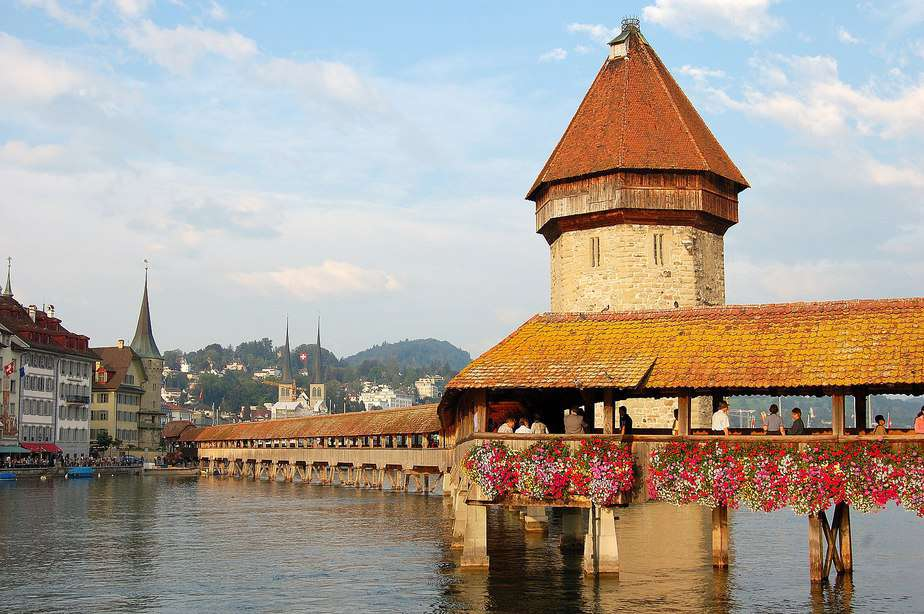
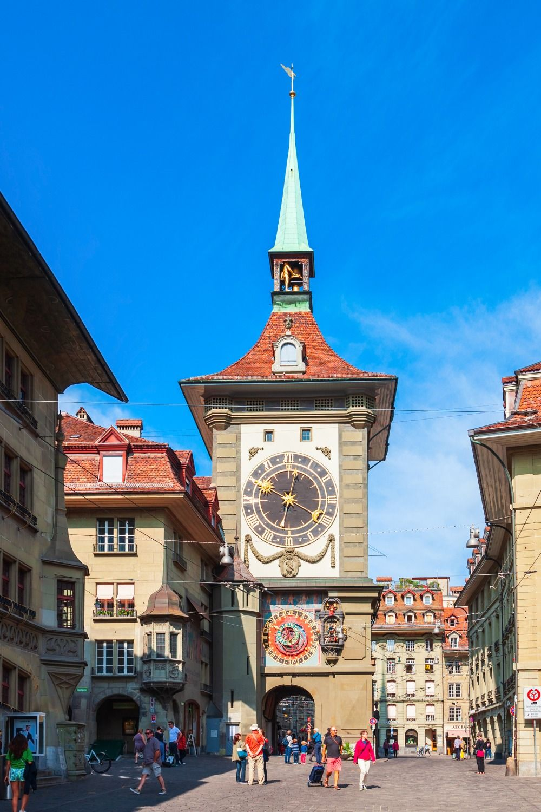
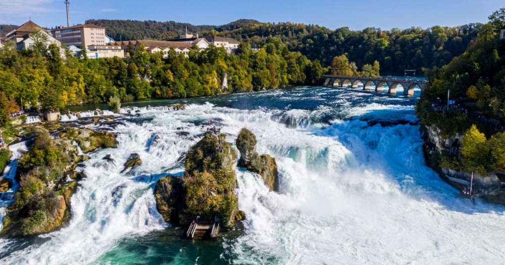
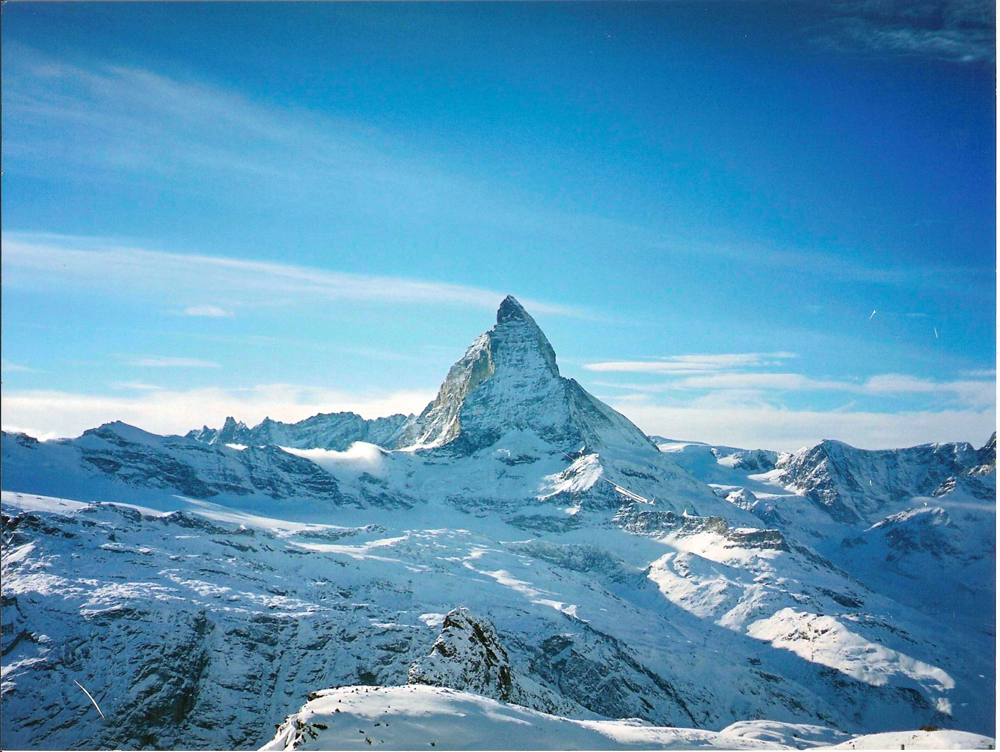
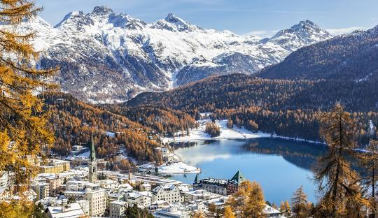

Top 6 Places |
Home | Sports | Gastronomy | Places | Economy |
| Chillon Castle (Montreux): A medieval castle on Lake Geneva surrounded by the Alps. It was once home to the Counts of Savoy and inspired Lord Byron’s poem “The Prisoner of Chillon.” Today, it’s one of Switzerland’s most visited historic sites. Occupied since Roman times and largely developed between the 12th and 16th centuries by the Counts of Savoy, it served as a fortress, residence, and strategic checkpoint controlling Alpine trade routes. |
 |
|  |
Chapel Bridge (Lucerne): A 14th-century wooden bridge crossing the Reuss River, decorated with paintings showing Lucerne’s history. It’s the oldest covered wooden bridge in Europe and was rebuilt after a fire in 1993, and many restored paintings can still be seen today, making it a powerful symbol of Lucerne’s resilience and heritage. |
| Zytglogge Clock Tower (Bern): A 13th-century clock tower with an astronomical clock and moving figures. It once served as a city gate and is now part of Bern’s UNESCO World Heritage Site. Its 1500s mechanism still works today. It displays not only the time but also the day, month, zodiac signs, and moon phases. Once used as a guard tower, prison, and clockmaker’s workshop. |
 |
|  |
Rhine Falls (Schaffhausen): Europe’s largest waterfall, formed around 15,000 years ago after the last Ice Age, 150 meters wide and 23 meters high, with immense volumes of water thundering over the rocks, especially in late spring and early summer. Surrounded by forests and cliffs, it’s a powerful symbol of Swiss nature where visitors can take boat rides close to the falls. The dramatic sound, mist, and sheer force of the water make Rhine Falls one of Switzerland’s most spectacular natural landmarks. |
| Matterhorn (Zermatt): A pyramid-shaped mountain on the Swiss–Italian border, 4,478 meters high. It’s one of the most famous peaks in the world and a national symbol of Switzerland, also known for appearing on the Toblerone logo. The mountain’s steep faces and sharp ridges make it both beautiful and dangerous, drawing climbers, photographers, and adventurers from around the globe. Today, the Matterhorn is a powerful symbol of Switzerland. |
 |
|  |
Sankt Moritz: A world-renowned luxury Alpine resort town in Switzerland's Engadine valley, situated at 1,800+ meters in the Graubünden canton. Famed as a premier winter sports destination (hosting the 1928/1948 Olympics) with high-end shopping and sunny weather, it offers iconic attractions like the frozen Lake St. Moritz, Cresta Run, and elite skiing at Corviglia. |
| Copy Right 2026 Ivana, Ivonne, Sarahi, Romi & Pau © |
| |
|